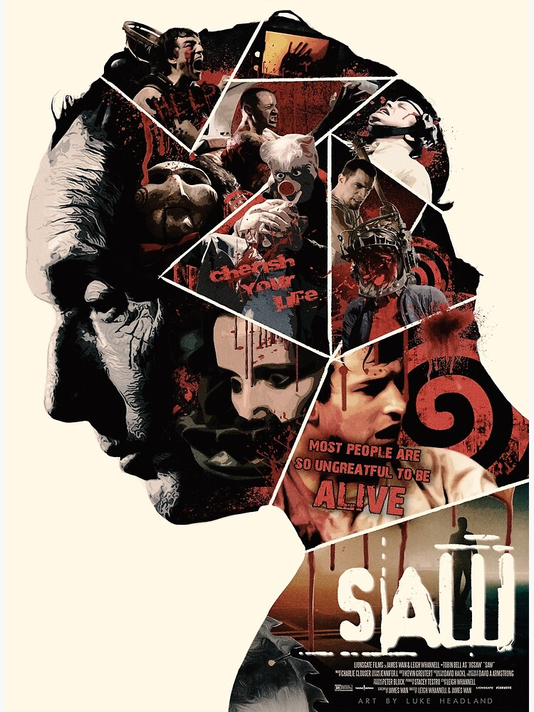

- Leer
- Ver series
- Ver peliculas
- Saga de Camino hacia el terror
- Las de Marvel Studios
- Saga de Saw
- Alice in borderland
- Sweet Home
- Doctor House

RAMON FERNANDO CELY SANDOVAL
Fecha de nacimiento: 22/03/1996
Respecto a mi considero que tuve una infancia buena bastante normal jugar y hacer tareas, no he visitado ningun pais a exepcion de Venezuela y eso solo por
encima, no practico ningun deporte.
La carrera hasta el momento me ha gustado a pesar de que algunas materias se me han dificultado. Aunque todo se supera
practicando y teniendo bastante
paciencia cuando las cosas no salen a la primera o como uno quiere.
Mis Hobbies
Mis peliculas y series favoritas
| Peliculas | Series |
|---|---|
| Saga de Camino hacia el terror |
Alice in borderland |
Las de Marvel Studios |
Sweet Home |
| Saga de Saw  |
Doctor House |
Mi cancion favorita
Tierra Santa - Mejor Morir en Pie
Mis materias favoritas
| Materia | Nota | Porque es de las favoritas |
|---|---|---|
| Programacion orientada a objetos II | 3.9 | La verdad cada materia tiene su parte interesante por mas de que aveces se nos dificulte la misma |
| Arquitectura de computadores | 3.1 | Aprendi nuevas cosas sobre los computadores |
| Bases de datos | 3.1 | Me llama la atencion el proceso y elboracion de las bases de datos y como se trabaja con ellas. |
| Probabilidad y estadistica | 3.6 | La estadistica es muy impoortante para la toma de decisiones
sobre como puede influenciar un proyecto o el rumbo a tomar de una empresa |
| Economia y finazas para ingenieros | 4.1 | Me parece muy interesante lo referente a la economia |